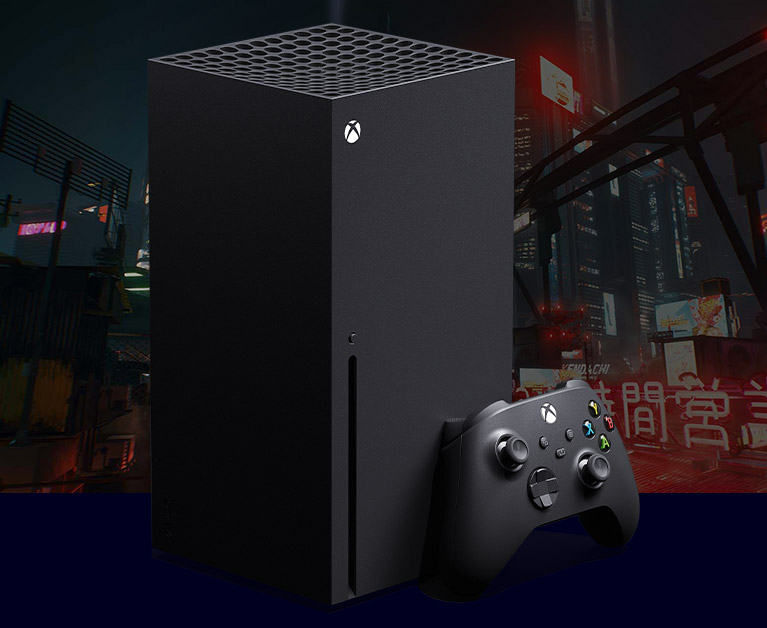

主機遊戲市場：微軟
微軟於 1975 年由比爾·蓋茲與保羅·艾倫創立，以電腦軟體起家，主要產品就是大家現在電腦所使用的 Microsoft Windows 及Microsoft Office。微軟在 1988年就有自製遊戲主機的想法，他們想將做軟體的專業攻略遊戲市場，但是和任天堂等遊戲大廠洽談困難重重，於是決定開發自家主機 Xbox，並開始下一盤很大的棋。
於是 Xbox 在 2001 年開賣，搭配 Halo 系列的遊戲以及賠本出售的銷售策略，Xbox 成功在已經有兩大巨頭的市場下搶得一定的市佔，並在 2002 年推出 Xbox Live 訂閱服務。
Xbox Live 是線上遊戲、數位媒體服務平台，提供遊戲的訂閱、購買、線上交流、儲存等各種網路應用的服務。後代機台 Xbox 360 、Xbox One、Windows Phone 和 Windows平台皆持續應用著 Xbox live。
目前 Xbox live 已經把服務的觸角延伸至 Android、iOS、也整合了包含 Netflix、Hulu等線上影音串流服務，在某種程度上，已經實現了當初微軟的計畫。我想微軟從一開始就沒有想在硬體上取勝，即使銷量永遠贏不了任天堂和索尼，但只要在雲端軟體上做出一番成就，就有無法被取代的市場地位甚至具有高成長性。